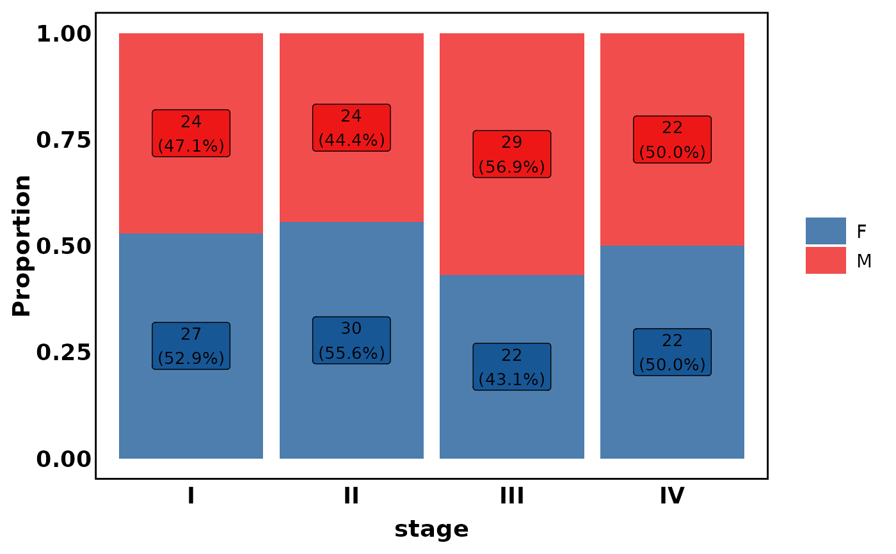
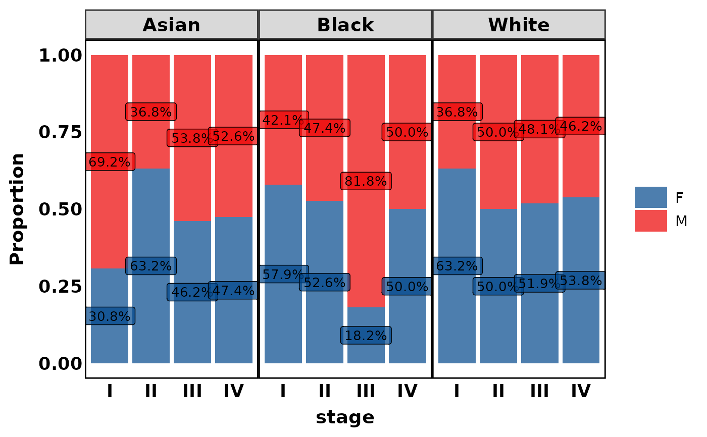
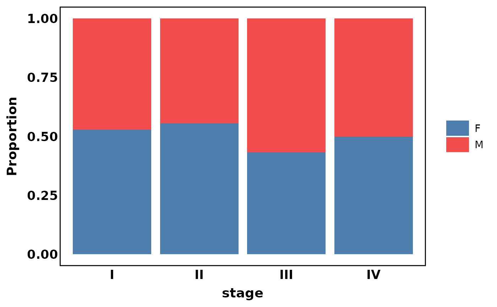
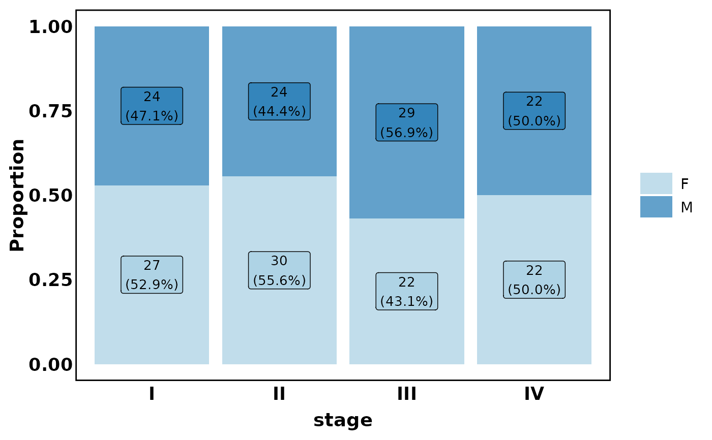
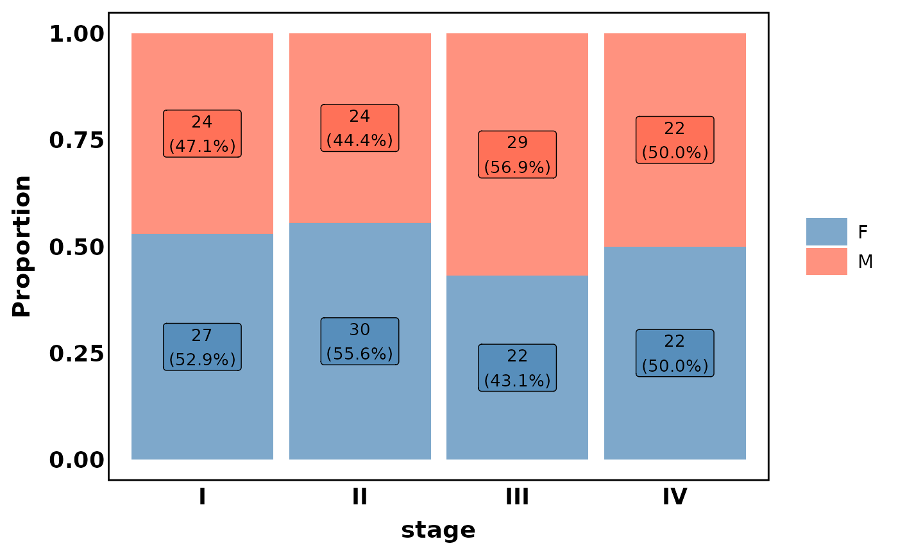
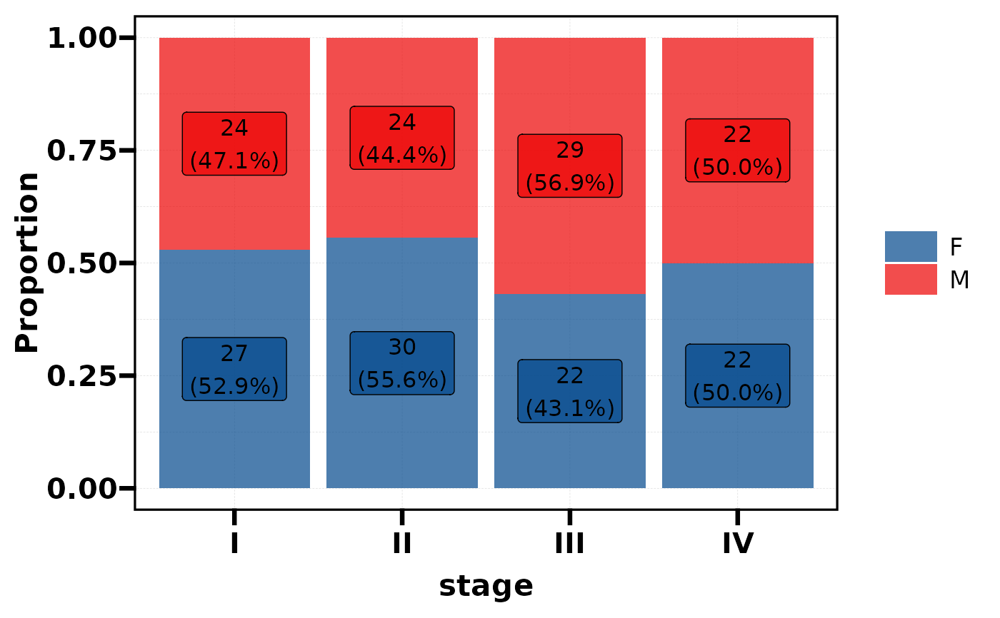
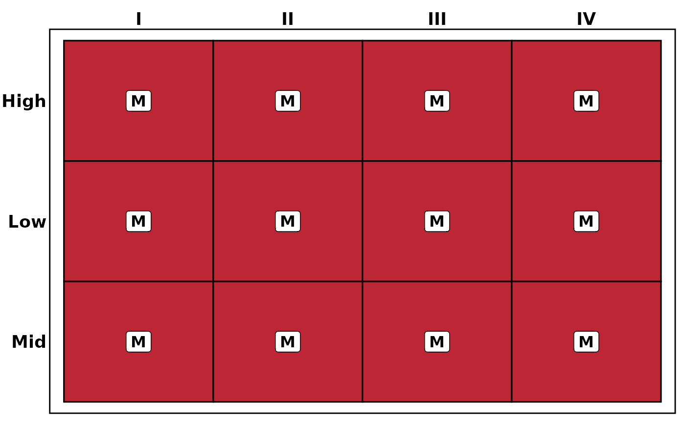
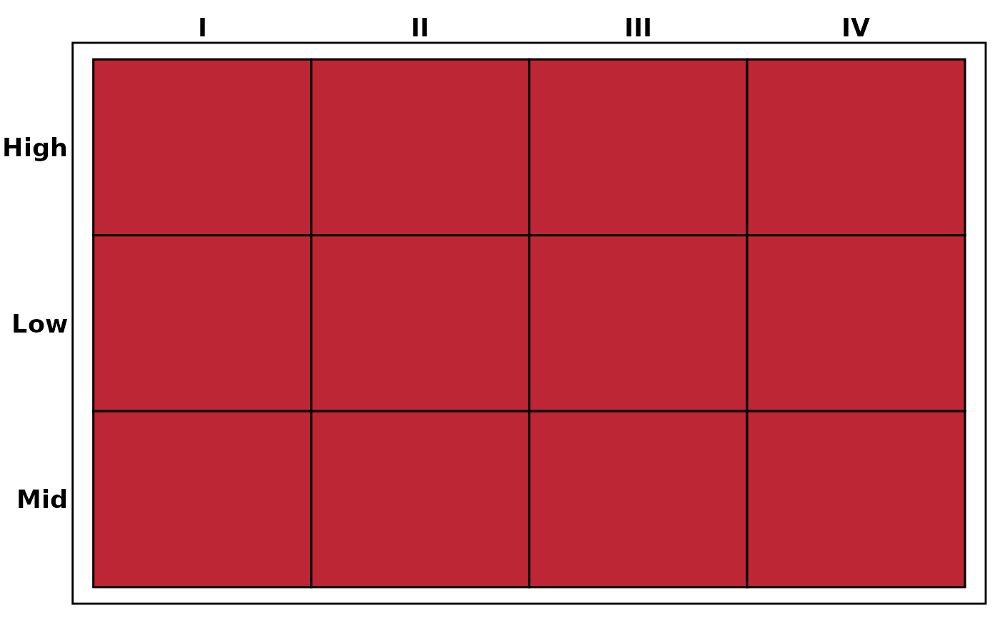

Visualise the cross-distribution of categorical variables as a stacked proportion bar chart (2 variables) or a tile heatmap (3 variables). The plot type is automatically determined by the number of variables.
Usage
plt_dist(
data,
vars,
facet = NULL,
palette = NULL,
alpha = 0.7,
label = TRUE,
base_size = 14
)Arguments
- data
A data frame.
- vars
Character vector of variable names.
2 variables:
c(x, fill)\(\rightarrow\) stacked bar chart.3 variables:
c(x, y, fill)\(\rightarrow\) tile heatmap.
- facet
Optional faceting variable name (string). Only used with 2-variable bar charts.
- palette
Colour palette. A character vector of colours, or a palette name from
pal_get(). Default usespal_lancet.- alpha
Colour transparency. Default 0.7.
- label
Logical, show count and percentage labels. Default
TRUE.- base_size
Base font size for the theme. Default 14.
See also
Other plot:
plt_cat(),
plt_cohen(),
plt_con(),
plt_radar(),
plt_sankey(),
plt_upset()
Examples
# --- Stacked bar chart (2 variables) ---
df <- data.frame(
stage = factor(sample(c("I","II","III","IV"), 200, TRUE)),
sex = factor(sample(c("M","F"), 200, TRUE)),
race = factor(sample(c("White","Black","Asian"), 200, TRUE)),
grade = factor(sample(c("Low","Mid","High"), 200, TRUE))
)
# Basic bar chart
plt_dist(df, vars = c("stage", "sex"))

# With facet
plt_dist(df, vars = c("stage", "sex"), facet = "race")

# Without labels
plt_dist(df, vars = c("stage", "sex"), label = FALSE)

# Custom palette (name from palette_list)
plt_dist(df, vars = c("stage", "sex"), palette = "Paired")

# Custom palette (colour vector)
plt_dist(df, vars = c("stage", "sex"), palette = c("steelblue", "tomato"))

# --- Heatmap (3 variables, auto-detected) ---
plt_dist(df, vars = c("stage", "grade", "sex"))

# Heatmap without labels
plt_dist(df, vars = c("stage", "grade", "sex"), label = FALSE)

# Adjust transparency and font size
plt_dist(df, vars = c("stage", "sex"), alpha = 0.5, base_size = 12)
